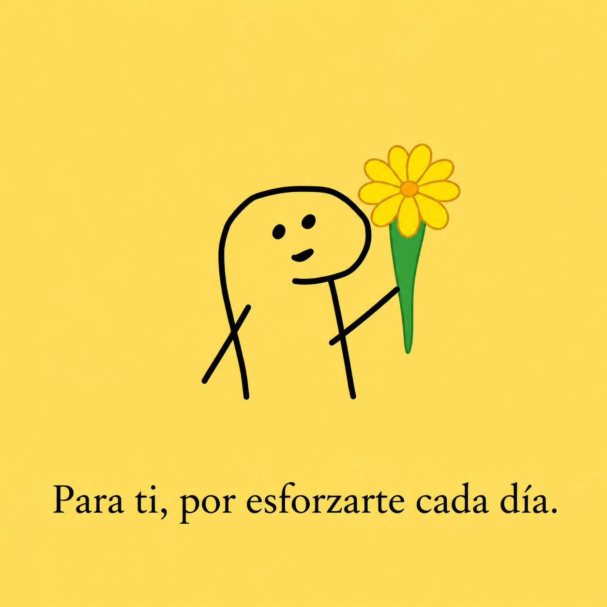

✦ A LITTLE FLOWER FOR YOU ✦
Una flor por tu esfuerzo.
Porque incluso los pequeños esfuerzos merecen ser reconocidos.

Esto es para ti, cariño. 🌼
Tal vez no todos los días sean fáciles, y quizá algunas veces termines cansada después de tanto esforzarte.
Pero quiero recordarte que cada pequeño paso que das tiene valor, incluso aquellos que nadie más puede ver.
Sigue aprendiendo, creciendo y luchando por las cosas que tanto deseas. No olvides también descansar y sentirte orgullosa de lo que vas logrando.
Esta pequeña flor es para ti, por seguir intentándolo cada día. ♡
♡
JUST FOR YOU · WITH CARE